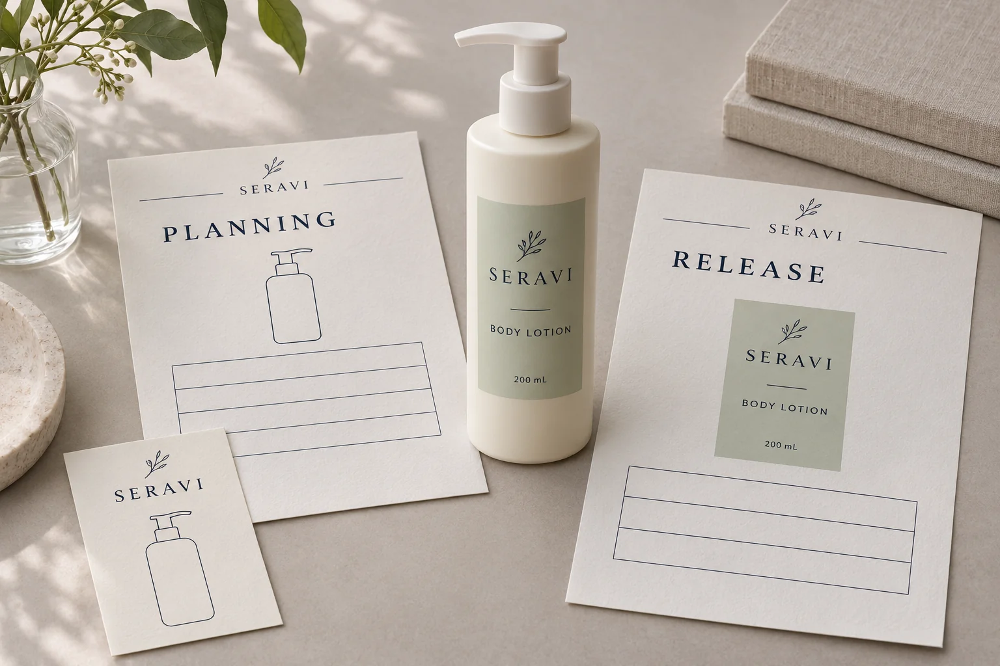
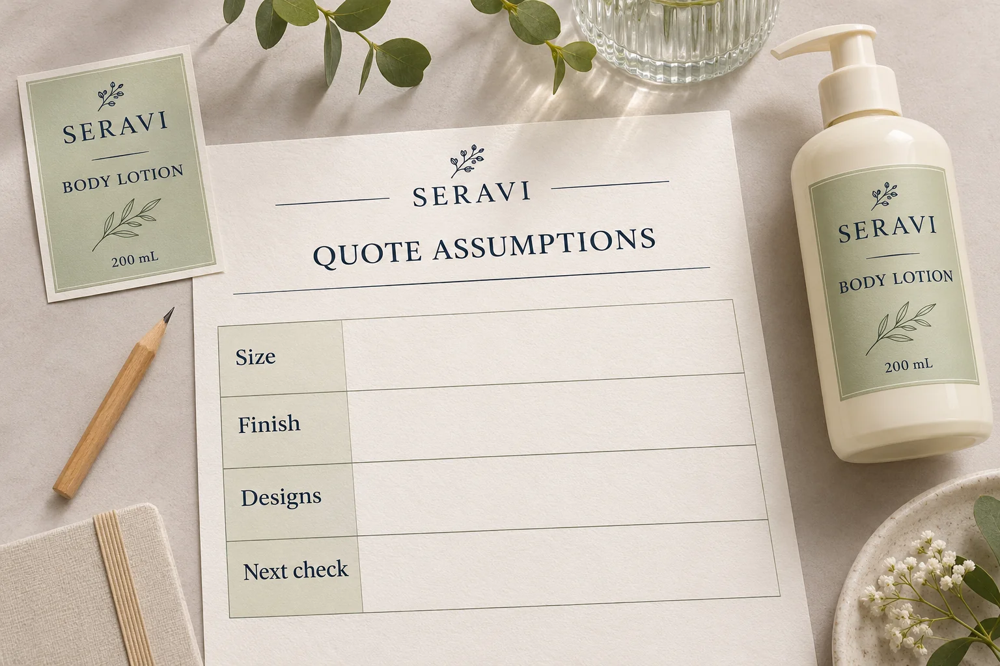

You can ask a label printer whether it can provide a planning estimate before cosmetic label artwork is final. Give it the specifications you know, identify the assumptions and ask what must be reconfirmed. Use the response for the planning decision it supports; do not treat an attractive provisional total as approval of an unfinished print order.
Wait for more definite pricing when the next decision needs a confirmed production scope and important variables remain unresolved. The choice is whether an assumption-based answer is useful now, not whether a polished PDF is always required before any conversation.

Say what the early price needs to help you decide
A brand comparing two packaging concepts may need to learn whether either route deserves further design work. A buyer about to place a print order needs a different level of confirmation. Tell the supplier which decision comes next and which facts are still open.
Etiket.az’s quotation FAQ, for example, offers a ballpark price from size, quantity and material without artwork, then says the final price is confirmed once details are clear. This is that provider’s described process, not a YT Labels price guarantee, response time or design-service offer. Ask what level of estimate is available for your actual project.
A quote is also separate from creating missing artwork. If you need a designer to build a back panel or adapt the brand identity, use the artwork work-package guide to assign that work. An early print estimate should identify whether it includes any design or preparation work rather than leaving that assumption inside the total.
Make the pricing assumptions visible
Start with the actual bottle or jar, the proposed label footprint, quantity per design, material and finish preference, supply format and required receiving destination. Mark an estimated dimension as estimated. A reference photograph can explain a visual intention while leaving its exact construction undecided.
Describe unfinished artwork in terms that may affect the proposal. Is the number of designs settled? Is foil optional? Is the label clear with a still-undecided white layer? Could the back-panel copy change the label size? Ask the printer which unresolved choices matter to its price and what information it needs to assess them.
Do not ask the supplier to invent your demand mix. If the plan contains three designs at one quantity and a fourth design that may be removed, show both scenarios. Request separately identified responses where useful. A single total with no quantity allocation cannot explain what was assumed about each SKU.
Keep the supplier’s returned assumptions beside your request. If it prices white film while the concept image shows clear material, resolve that difference before using the number in an internal comparison. A deliberate alternative can be useful; an unnoticed substitution changes the question.
Use the estimate for a bounded comparison
Compare proposals against the same assumption set. Use one scenario reference and date so the team knows which quantity, footprint and finish produced each response. Leave missing costs unpriced rather than filling them with an invented industry allowance. The quote-unit guide helps normalize counts, while the delivery-scope guide handles what the freight total covers.
If changing an unresolved option could alter the route you prefer, ask for that alternative to be assessed before selecting it. A wide planning range may still help eliminate an unsuitable concept. It cannot tell the team which of two close alternatives is cheaper when essential work is excluded from one response.
This guide supplies no standard percentage to add to a provisional price. The relevant uncertainty is the identified change and the supplier’s response to it. Keep any validity conditions, remaining review and confirmation requirement with the quote. A date printed at the top does not explain those conditions by itself.

Build an assumption-to-confirmation record
Use this brief for each scenario you actually need priced. It connects early planning to the later confirmed offer without pretending the unfinished choices are already approved.
| Record | Information to obtain | How to use it |
|---|---|---|
| Planning decision | The concept or order decision, known inputs and scenario reference. | Establish what the early response may reasonably support. |
| Assumptions and exclusions | Unfinished size, artwork, versions, construction or finish; what the response includes. | Keep uncertainty visible instead of treating it as a settled specification. |
| Reconfirmation trigger | The particular change or missing evidence the supplier says requires review. | Request an updated response when that input is resolved or changes. |
| Order-ready response | Identified final files/specification, quantities, included work and remaining release conditions. | Use the acknowledged current offer for the next authorization stage. |
- Describe the planning decision and send the known specifications.
- Ask the printer to identify its assumptions, exclusions and required next inputs.
- Compare only matching scenarios and request material alternatives where they affect the choice.
- When inputs are settled, obtain a response against the current files and specifications before the relevant order release.
Consider a hypothetical lotion project whose first concept uses a plain printed label but whose final design adds foil. The earlier number explains the plain concept. It does not establish the price or preparation scope for the foil version. Ask for the changed proposal and keep its reference linked to the accepted artwork.
Hold a production decision if an important assumption remains unresolved, the final design differs from the priced scenario, or the supplier has not acknowledged the current scope. Once offers are sufficiently confirmed, the supplier award comparison addresses eligibility and selection. That later decision should not be made by disguising a planning estimate as an equally complete offer.
Ask which pricing stage your project can support
For cosmetic labels, send the container, proposed size, quantities per design and material or finish direction. Mark what is unfinished and state whether you need a concept comparison or a current production quotation. Ask which inputs must be resolved next.
The form prepares a message. Share reference images and artwork by email or WhatsApp.
Prepare a pricing-scope inquiry